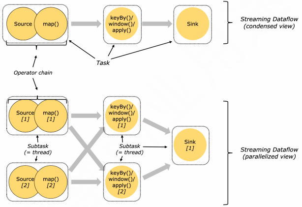
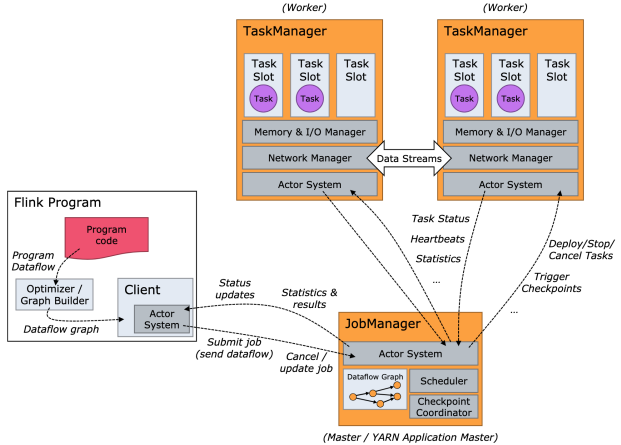
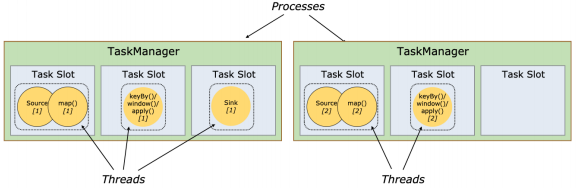
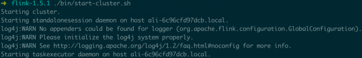
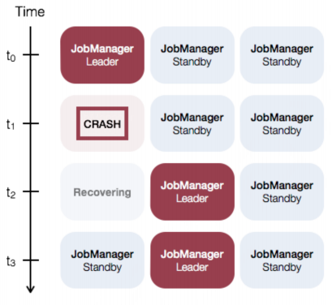
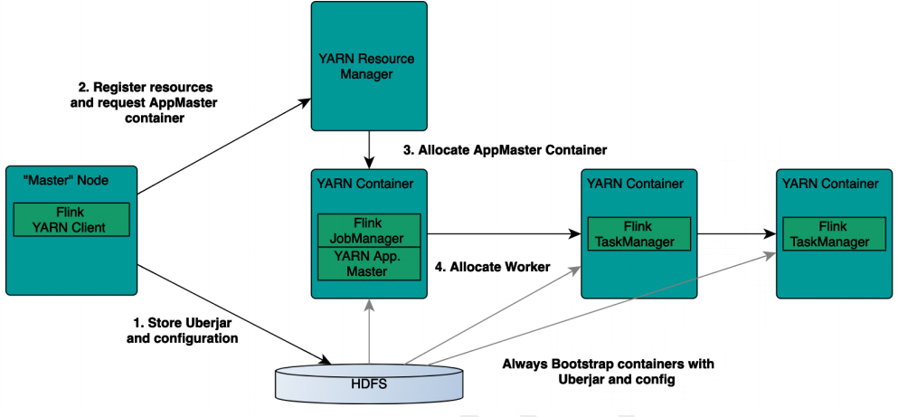

Flink 的开发环境搭建和应用的配置、部署及运行
1、Flink 开发环境部署和配置
Flink 需要类 Unix 的环境。使用 Windows 系统时，推荐使用 Win 10 系统的 Linux 子系统（WSL， Win 7 不支持安装和运行 WSL）来编译和运行。
Java 至少是 Java 8。
Flink 必须使用 Maven 3，推荐使用 Maven 3.2.5。
推荐使用 IntelliJ IDEA IDE 作为 Flink 的 IDE 工具。不建议使用 Eclipse IDE，官方说法是，Eclipse 的 Scala IDE 和 Flink 用的 scala 不兼容。
2、运行 Flink 应用
2.1、基本概念

Task 是 Flink 中资源调度的最小单位，在一个 DAG 图中，不能被 chain 在一起的 operator 会被分隔到不同的 Task 中。

Flink 运行时包括两类进程：
- JobManager（又称 JobMaster）：协调 Task 的分布式执行，包括调度 Task、协调创建 checkpoint 以及当 job failover 时协调各个 Task 从 checkpoint 恢复。
- TaskManager（又称 Worker）：执行 Dataflow 中的 Tasks，包括内存 buffer 的分配、DataStream 的传递等。

Task Slot 是一个 TaskManager 中的最小资源分配单位，一个 TaskManager 中有多少个 Task Slot 就意味着能支持多少并发的 Task 处理。一个 Task Slot 可以执行多个 Operator，这些 Operator 是可以被 Chain 在一起处理的。
2.2、单机 standalone 模式运行
Flink binary 目录下，执行：
./bin/start-cluster.sh
输出以下结果，表示启动正常：

通过 http://127.0.0.1:8081/ 可以看到 Flink 的 Web 页面。
提交一个 Word Count 的任务，可以在 web 界面看到 job。
./bin/flink run examples/streaming/WordCount.jar
使用 --input 参数可以指定本地文件作为输入：
./bin/flink run examples/streaming/WordCount.jar --input ${your_source_file}
2.2.1、配置
本机上执行 jps 命令，可以看到 Flink 相关进程，主要有两个：JobManager 和 TaskManager。
Flink binary 目录下的 conf 子目录中的 flink-conf.yaml 文件是配置文件。更改配置文件需要重启 standalone 集群。
停止集群命令：
./bin/stop-cluster.sh
2.3、多机部署 Flink standalone 集群
需要注意：
- 每台机器上都要配置好 Java 以及 JAVA_HOME 环境变量
- 每台机器上部署的 Flink binary 目录保证是同一个目录
- 如果需要用 hdfs，需要配置 HADOOP_CONF_DIR 环境变量配置
- 最好挑选一台机器，和其他机器 ssh 打通
既然是集群部署，提交作业时可以配置并行度：
./bin/flink run examples/streaming/WordCount.jar --input hdfs:///test_dir/input_dir/story --output hdfs:///test_dir/output_dir/output --parallelism 20
2.4、Standalone 模式的 HighAvailability（HA）部署和配置
从 Flink Runtime 架构可知，JobManager 是整个系统中最重要的，如果 TaskManager 有一个故障，资源足够情况下只需将相关 Task 调度到其他空闲 TaskSlot 上，然后 Job 从 Checkpoint 中恢复即可。但是，如果 JobManager 故障，就必须等 JobManager 重新恢复，如果恢复时间过长，则整个 Job 失败。
使用 standalone 模式，可以部署配置 HA，有多个 JobManager 待命，从而使得 JobManager 能够持续服务。

standalone ha 部署需要依赖 Zookeeper。
2.5、yarn 模式运行 Flink

相比 standalone 模式，yarn 模式运行 flink job 的优点： ● 资源按需使用，提高集群的资源利用率 ● 任务有优先级，根据优先级运行作业 ● 基于 YARN 调度系统，能够自动化地处理各个角色的 failover ○ JobManager 进程和 TaskManager 进程都由 Yarn NodeManager 监控 ○ 如果 JobManager 进程异常退出，则 Yarn ResourceManager 会重新调度 JobManager 到其他机器 ○ 如果 TaskManager 进程异常退出，JobManager 会收到消息并重新向 Yarn ResourceManager 申请资源，重新启动 TaskManager
2.5.1、在 Yarn 上启动 Long Running 的 Flink 集群（Session Cluster 模式）
查看命令参数：
./bin/yarn-session.sh -h
创建一个 Yarn 模式的 Flink 集群：
./bin/yarn-session.sh -n 4 -jm 1024m -tm 4096m
其中用到的参数：
- -n：TaskManager 的容器数量
- -jm：JobManager 容器的 JobManager 内存，单位是可选的，默认 MB
- -tm：每个 TaskManager 容器的 TaskManager 内存，单位是可选的，默认 MB
- -qu：指定 YARN 队列
- -s：每个 TaskManager 的 TaskSlot 数量
- -t：上传（transfer）指定目录的文件
提交 Flink job 到 Flink 集群：
./bin/flink run examples/streaming/WordCount.jar --input hdfs:///test_dir/input_dir/story --output hdfs:///test_dir/output_dir/output
虽然没有指定 Yarn application 的信息，但是也可以提交到 Flink 集群，因为 /tmp/.yarn-properties-${user} 文件中保存了上次创建 Yarn session 的集群信息。如果再次创建 Yarn session 则上次创建的文件会被覆盖。
如果 /tmp/.yarn-properties-${user} 被删除或者要在另一台机器上提交作业到这个 Yarn session，可以配置 HA——high-availability.clusert-id 参数，用它根据 cluster-id 从 Zookeeper 上获取 JobManager 的地址和端口以提交作业。
如果 Yarn session 没有配置 HA，那么必须在提交 Flink job 的命令中通过 -yid 参数指明 Yarn 上的 Application ID：
/bin/flink run -yid application_1548056325049_0048 examples/streaming/WordCount.jar --input hdfs:///test_dir/input_dir/story --output hdfs:///test_dir/output_dir/output
每次跑完任务不久，TaskManager 就会被释放，下次提交任务时，TaskManager 会重新启动。如果希望延长空闲 TaskManager 的超时时间，可以在 conf/flink-conf.yaml 文件中配置以下参数，单位是 millseconds（默认 30000L，即 30 秒）：
slotmanager.taskmanager-timeout: 30000L # deprecated, used in release-1.5
resourcemanager.taskmanager-timeout: 30000L
2.5.2、在 Yarn 上运行单个 Flink Job（Job Cluster 模式）
./bin/flink run -m yarn-cluster -yn 2 examples/streaming/WordCount.jar --input hdfs:///test_dir/input_dir/story --output hdfs:///test_dir/output_dir/output
Flink Job 运行结束，就会退出。常用的配置有：
- -yn：TaskManager 的 Yarn 容器数量
- -yqu：指定 Yarn 队列
- -ys：每个 TaskManager 的 slots 数量
可以通过 help 命令查看可用的参数：
./bin/flink run -h
2.6、Yarn 模式下的 HighAvailability 配置
首先要确保启动 Yarn 集群的 yarn-site.xml 中的如下配置：
<property>
<name>yarn.resourcemanager.am.max-attempts</name>
<value>100</value>
</property>
这是 YARN 集群级别 AM 重启的上限。
然后，conf/flink-conf.yaml 文件中配置 Flink job 的 JobManager 的重启次数：
yarn.application-attempts: 10 # 1+ 9 retries
conf/flink-conf.yaml 文件中还要配置 ZK 相关配置：
# 配置 high-availability mode
high-availability: zookeeper
# 配置 zookeeper quorum（hostname 和端口需要依据对应 zk 的实际配置）
high-availability.zookeeper.quorum: z05f02321.sqa.zth.tbsite.net:2181,z05f10215.sqa.zth.tbsite.net:2181
# （可选）设置 zookeeper 的 root 目录
high-availability.zookeeper.path.root: /test_dir/test_standalone2_root
# 删除这个配置
# high-availability.cluster-id: /test_dir/test_standalone2
# JobManager 的 meta 信息放在 dfs，在 zk 上主要会保存一个指向 dfs 路径的指针
high-availability.storageDir: hdfs:///test_dir/recovery2/
注意，high-availability.cluster-id 配置最好去掉，在 Yarn（以及 Mesos）模式下，cluster-id 如果不设置的话，会配置为 Yarn 上的 Application ID，从而可以保证唯一性。